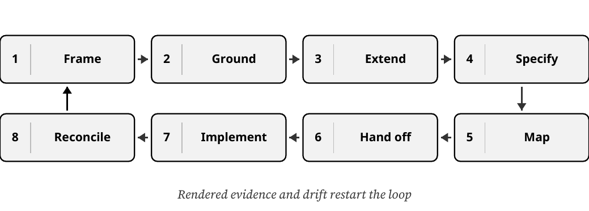
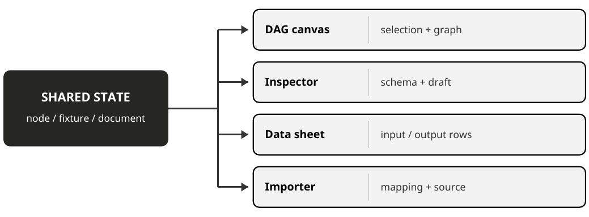
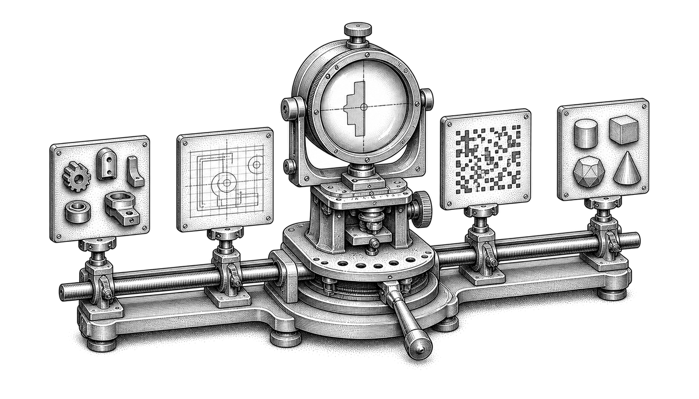
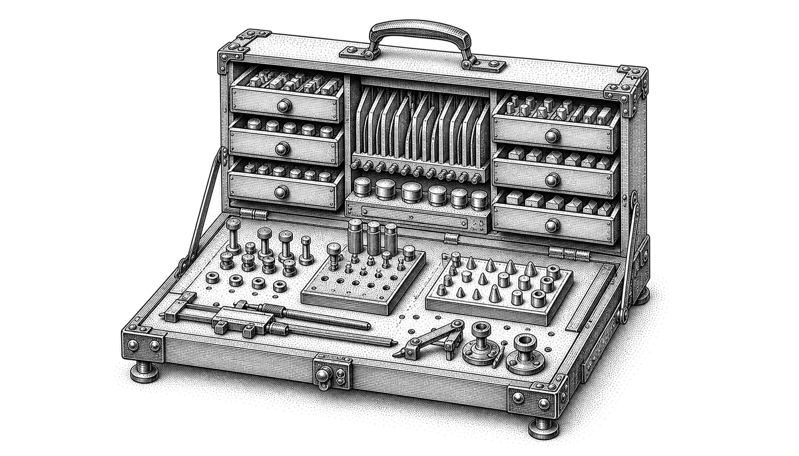
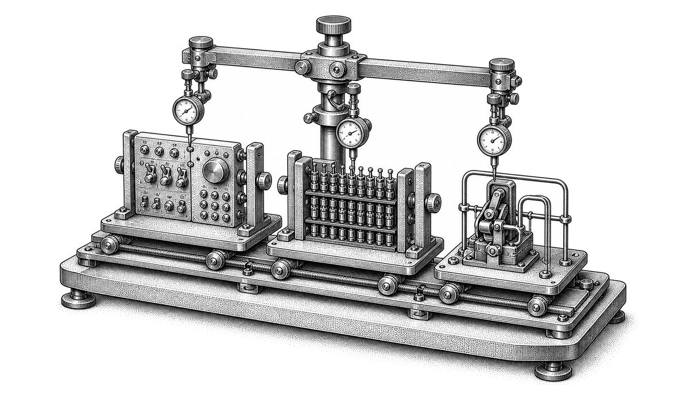
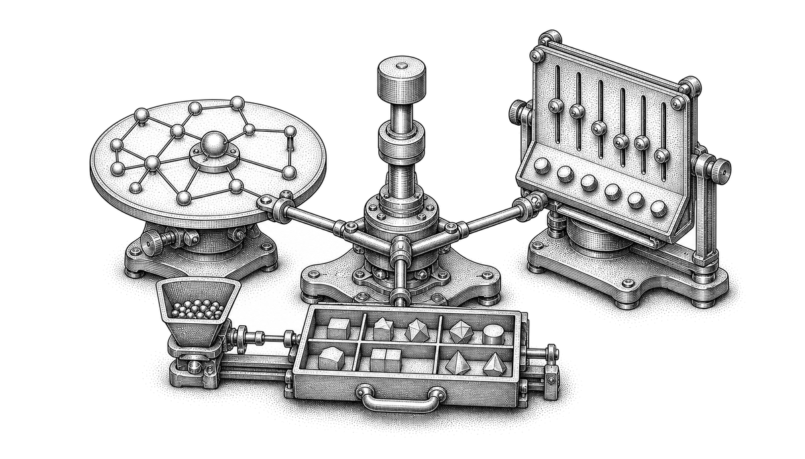
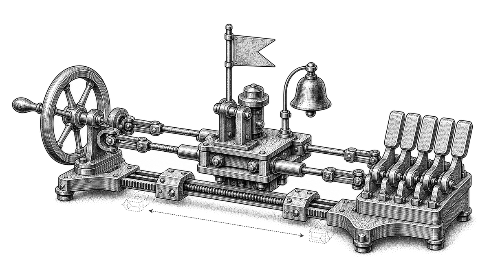
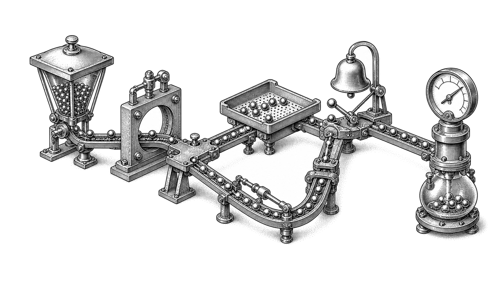

Claude Design Field Guide
From a living design system to a production-ready handoff
Michael Long, surfaces.systems
October 3, 2026 · Version 1.1.0
Next version review
Site + PDF
The next review has not been scheduled.
Site and PDF updates publish together after manual review.
Contents
- Orientation
- Decide what is authoritative
- Prepare Simple Design System
- Validate the imported system
- Extend the existing screen
- Design the adjacent surfaces
- Specify states and transitions
- Prove responsive and accessible behavior
- Run the design evidence gate
- Hand off to Claude Code and developers
- Implement, verify, and reconcile
- Guided capstone
- Capstone answer key
- Appendix A - Prompt sequence
- Appendix B - Handoff README template
- Appendix C - Final validation checklist
- Appendix D - Simple Design System reference
- Appendix E - Product boundaries and operating risks
- Glossary
- Further reading and source notes
- Changelog
Orientation
Use this guide to ground a product prototype in existing components, extend a bounded screen, and prepare an engineering handoff. Data Pipeline Studio is a fictional teaching example built with Simple Design System React primitives.
Anthropic documents interactive prototyping and a Claude Code handoff in Claude Design. Design is now available in conversations and the Artifacts tab as well as at claude.ai/design. The Claude Code reference describes /design more narrowly: it drafts artboards on a canvas. Record the surface you use and test the required interactions and exports there. A generated artboard alone does not prove the prototype journey works. Direct native-Figma export is not established by the reviewed documentation. Use Figma MCP when editable Figma content is required. See the Design getting-started guide and Claude Code artifact guide.
Start with the current system and screen, then prepare a handoff engineers can inspect. The companion application simulates persistence and pipeline runs in the browser. Use it to explore the interaction patterns and acceptance tests.
DECISION: The operating model |
Use Claude Design for system-grounded exploration and interaction design. Use Claude Code for repository-aware implementation. Add Figma MCP and Code Connect when the team needs native Figma editing, component mappings, or a code-to-canvas loop. |
What you will build
The recurring example is Data Pipeline Studio, a fictional extension to a teaching baseline at /pipelines/customer-health/edit. The current product lets an analyst inspect a linear pipeline and edit one step at a time. The extension adds a directed acyclic graph editor, a richer node inspector, a resizable data sheet, and a file importer with mapping and recovery states.
The guide never treats the example as a blank canvas. The global shell, route, permissions, persistence, run APIs, typography, spacing, forms, buttons, tables, dialogs, notifications, and status patterns already exist. The assignment is to preserve that working product while changing a bounded part of it.
What the guide produces
By the end, you will have:
A source-of-truth map that says which artifact governs each decision.
A verified Claude Design system based on Figma's Simple Design System and its React codebase.
A preservation brief for an existing screen.
A working prompt sequence for a DAG canvas, node inspector, data sheet, and importer.
A state matrix covering loading, error, permissions, stale data, conflicts, and recovery.
A component-to-code map that separates reuse, composition, and legitimate extensions.
A design review record and evidence gate.
A Claude Code implementation prompt and handoff README.
A Figma-native branch for teams that require editable frames.
A guided capstone, answer key, scoring rubric, and final validation checklist.
How to use the field guide
Read Chapters 1 through 3 before opening Claude Design. Those chapters settle scope, sources, and the design-system baseline. Chapters 4 through 7 are the design loop. Chapters 8 through 10 cover review, handoff, implementation, and drift. The capstone runs the whole sequence with a single feature journey.
Each checkpoint asks for a small artifact. Keep the artifacts together. They become the handoff package; they are not homework that gets discarded after the prototype looks good.
FIELD NOTE: The core discipline |
A prototype can look like the product while quietly replacing its components, losing its states, and disconnecting itself from real data. Visual resemblance is only one form of evidence. Traceability, behavior, and recovery paths are the other three. |
Before you begin
You need an approved source package, repository access for implementation, and a Figma account for the native-Figma branch. Claude Design is beta on Pro, Max, Team, and Enterprise. Pro, Max, and Team have Design enabled by default; Enterprise owners enable the Design template under Organization settings > Artifacts. Design systems and standalone Claude Design have separate controls. Confirm the intended organization and surface before importing sources. See the Design admin guide.
Claude Code /design requires version 2.1.265 or later, an enabled Design template, and an artifact-capable session. Sign in with /login using claude.ai. API-key-only sessions cannot publish artifacts, and third-party cloud-provider sessions are unsupported. The artifact guide also lists organization-policy restrictions. Confirm account, provider, and policy before treating a missing command as a setup defect. See artifact availability.
Uploaded assets persist under the applicable retention policies. Anthropic documents unsupported Design data residency and restrictions for CMEK, ZDR, and HIPAA-ready configurations in the new Artifacts experience. Standalone audit logging and integrated artifact records have different coverage. Confirm those requirements with the organization owner before uploading proprietary work. See the Artifacts admin guide.
For this guide, use the public Simple Design System Community file and Figma's open-source figma/sds React repository. Duplicate the Community file into your own drafts before attempting connected inspection or editing. The public source remains untouched.
The workflow at a glance
The work is a loop. Frame the change, ground it in the real system, extend one bounded surface, specify the missing behavior, map every element, hand it off, implement it, and reconcile the rendered result. Drift and new evidence restart the loop.

Stage | Working tool | Governing evidence | Exit condition |
|---|---|---|---|
Frame | Team artifact | Product brief, current route, shipped behavior | Scope and preservation boundary approved |
Ground | Claude Design | System code, tokens, representative screens | System test passes |
Extend | Claude Design | Current screen plus interaction contract | Proposed flow works end to end |
Specify | Claude Design and team review | State matrix, copy, data fixtures, accessibility notes | No critical state is missing |
Map | Design and engineering | Component inventory and code paths | Every visible element has a disposition |
Hand off | Claude Design to Claude Code | Bundle, README, decision log, acceptance tests | Engineer can implement without guessing intent |
Implement | Claude Code and repository tools | Production conventions, tests, rendered application | Tests and visual checks pass |
Reconcile | Figma MCP if required | Approved rendered behavior and native Figma file | Drift is logged and resolved |
Keep the product surfaces on one state spine
The DAG canvas, node inspector, data sheet, and importer are coordinated views of the same selected node, fixture data, and document state. A change that appears on only one surface is a product defect, even when that surface looks polished in isolation.

The chapters move from source authority to rendered proof. Worksheets and appendices remain part of the same operating package.
Decide what is authoritative
A clean workflow begins by deciding which source governs visual language, behavior, data, and implementation.

The phrase "use our design system" hides several different sources. A Figma library may define component anatomy and variants. A React package may define actual props and accessibility behavior. A shipped screen may reveal composition rules that appear nowhere in documentation. Product code and APIs determine what the interface can really do.
Claude can read several of these sources. It cannot resolve an unspoken conflict between them. The team needs a declared hierarchy before generation begins.
Build the source-of-truth stack
Use five layers:
Production behavior. The current application, routes, permissions, persistence, data contracts, and tested interaction rules.
Production component code. The components, props, tokens, accessibility semantics, and imports that engineers can actually ship.
Published design library. Component anatomy, variants, variables, layouts, and design guidance.
Representative shipped screens. Evidence for composition, density, hierarchy, responsive behavior, and local conventions.
Product intent. The approved problem, target user, success journey, non-goals, and acceptance tests for the change.
When two layers disagree, record the conflict. Do not let Claude select a winner through visual improvisation.
EXAMPLE: Data Pipeline Studio |
In the teaching baseline, the route, Save, Run, permissions, and persistence are simulated behavior. In a real product extension, the current implementation and API contracts govern those decisions. The Simple Design System React package governs reusable primitives. The duplicated Figma file governs component anatomy and variables. The current Pipeline Detail screen governs shell and density. The capstone brief governs the new DAG journey. |
Freeze the preservation boundary
An extension prompt needs two lists: what may change and what must remain stable. The second list is usually more important.
For Data Pipeline Studio, preserve:
The global app shell and left navigation.
Breadcrumb, pipeline name, environment badge, and last-run metadata.
Save, Run, and overflow actions.
Existing typography, spacing, controls, tables, dialogs, status badges, and notifications.
Permissions, routing, persistence, and run APIs.
Current copy outside the approved feature surface.
Change:
The central linear editor becomes a DAG workspace.
The right-side editor becomes a schema-driven node inspector.
The collapsed preview becomes a resizable data sheet.
The basic file-upload dialog becomes a multi-stage importer.
The boundary lets the team review a small diff. Without it, every generated screen becomes a redesign proposal.
Name the baseline fixture
Claude needs a stable example that can appear in every screen and state. Use one fixture pipeline:
Customers CSV - source
Normalize Email - transform
Validate Customer Schema - quality gate
Publish to Warehouse - destination
Quarantine Invalid Rows - proposed branch
Use customers-august.csv and its JSON equivalent for one six-record dataset. The importer proposes customer_id and health_score mappings, but leaves the required contact_email to email mapping unresolved. The final confirmation accepts all three mappings and the chosen recovery policy. No graph change occurs before confirmation.
CSV row | Customer ID | Raw contact_email | Raw health_score | Expected result |
|---|---|---|---|---|
2 | C001 | ALICE@EXAMPLE.COM | 82 | Publish as alice@example.com |
3 | C002 | bob@example.com | 65 | Publish as bob@example.com |
4 | C003 | invalid-email | 50 | Invalid email |
5 | C004 | empty | 77 | Email is required |
6 | C005 | eve@example.com | not-a-number | Invalid health_score |
7 | C006 | FRANK@EXAMPLE.COM | 91 | Publish as frank@example.com |
Normalize Email trims outer whitespace and lowercases all six emails. The schema gate requires a nonempty unique customer ID, an email with a domain suffix, and a numeric health score from 0 to 100. Three records pass. C003, C004, and C005 go to quarantine or are excluded under Reject invalid rows. CSV row numbers include the header; JSON uses the corresponding record ordinal plus one. A production parser must track physical file locations separately, including blank and multiline records.
Use the executable teaching contract
Download the local exercise package and extract it. From the extracted folder, start the companion application:
Use Node.js 22 or later and keep the bundled sds/ folder beside example/. Dependency installation needs the npm registry or a populated local cache. Leave the server running while you use the browser; stop it with Ctrl+C when finished. No Claude or Figma account is needed to run this application.
Open http://127.0.0.1:4192/pipelines/customer-health/edit?baseline=1 for the baseline, then remove the query to open the extension. If you have used the application before, choose Teaching test controls > Reset fixture before starting a fresh journey.
Start from the preserved linear baseline at /pipelines/customer-health/edit?baseline=1. Open the extension at the same route without the query. Preserve the shell text, navigation, pipeline identity, environment badge, Save, Run, permissions, and browser persistence. This baseline was authored for the exercise; it is not a shipped product or a Claude Design export.
Choose the fixture through the file picker or drop zone. Confirm contact_email -> email and all proposed mappings. Choose Send to quarantine for the main journey.
Confirmation replaces the unconfigured Customers CSV placeholder with a new source ID, august, named Customers CSV (August import). It preserves downstream nodes, removes the placeholder's old edge, selects the new source, and opens its raw preview. Import is atomic; cancel or failure leaves the graph unchanged. The local exercise supports one committed import per reset.
Connect august to normalize. The normalized preview contains the same six customer IDs. Add quarantine, then connect validate to quarantine. Keep normalize -> validate -> warehouse intact.
Save before Run. The configured warehouse target starts as missing-warehouse, so the intended first run fails at warehouse. The fixture's required target is customer_health; a helper hint must not claim it is already configured. Preserve the failure across reload.
Select the failing node, set its target to customer_health, Save, and Run again. Expect three published IDs (C001, C002, C006), three quarantined IDs (C003, C004, C005), and zero rejected rows. Under Reject invalid rows, expect three published, zero quarantined, and three rejected.
Attempt validate -> august and normalize -> quarantine. The first would create a cycle; the second has incompatible ports. Each attempt must explain the reason and leave the graph unchanged. Deleting a required downstream edge must block Run.
Save failure must preserve the draft and keep Run disabled until Save succeeds. The local conflict control changes only a simulated revision; explicit reapply is safe for that fixture. A real concurrent edit needs a content comparison and reviewed merge. Warehouse lookup, row publication, quarantine storage, server authorization, and telemetry remain implementation requirements.
The local example exercises buttons, inputs, selects, dialogs, tags, and tables from a pinned SDS React snapshot. Its named connection list supplies the non-pointer graph path. Pointer port dragging, drawn edge geometry, virtualized large datasets, resizable columns, a complete schema-driven inspector, and screen-reader behavior remain separate acceptance work. Local screenshots and passing tests do not establish that Claude Design produced the workflow.
Define the success journey
The recurring journey is:
Open the existing pipeline.
Import customers-august.csv.
Resolve one required column mapping.
Create a source node from the import.
Connect it to Normalize Email.
Inspect transformed rows in the data sheet.
Add a quarantine branch for invalid records.
Save and run the pipeline.
Identify and repair a failed node.
Run the pipeline successfully.
Every surface in the guide serves this journey. Anything else is either a reusable system concern or a non-goal.
Write the first artifact: the extension brief
Use a one-page brief with these fields:
Current route and baseline screen.
Primary and secondary users.
User problem and job to complete.
Success journey.
Change boundary.
Preservation boundary.
Supported viewports.
Data fixture.
Existing behavior that cannot regress.
Open product decisions.
Approval owner for each decision.
CLAUDE DESIGN / BASELINE ANALYSIS |
|---|
You are preparing to extend an existing production screen. Do not generate a new design yet. |
5. a proposed change boundary for the requested feature. |
Extension brief | ||||||
| ||||||
| ||||||
| ||||||
| ||||||
| ||||||
| ||||||
| ||||||
|
Chapter checkpoint
The team can point to the authoritative source for behavior, components, Figma anatomy, and product intent.
The existing screen has a named preservation boundary.
One fixture carries through the complete journey.
Non-goals are explicit.
Claude has analyzed the baseline without generating a replacement screen.
Sources 1-4, 18-20. Author synthesis: the source-of-truth method.
Prepare Simple Design System
Turn a public design kit and its React library into a compact, inspectable source package.

Simple Design System is a useful teaching source because the Figma library and React codebase were designed to work together. The repository includes variables, styles, primitives, compositions, icons, Storybook stories, and Code Connect mappings. It also exposes the limits of the example: it is a responsive web foundation, not a ready-made graph editor.
Duplicate before you connect
Open the Simple Design System Community file and choose Make a copy. Work in the copy. Figma MCP can read content the authenticated account has permission to view or edit; native writing to an existing file requires edit permission and a Full seat. Confirm that the connected account can access your working copy before inspecting or editing it. See Figma access and permissions and write to canvas.
Keep the original source URL in the project record:
https://www.figma.com/design/AIulMBySUibjRtykdngCUp/Simple-Design-System--Community-?node-id=3-5
Record the duplicate's file URL separately. Do not overwrite the original URL in source notes; the two links serve different purposes.
FIELD NOTE: Why the copy matters |
The public Community file is the provenance source. The duplicate is the working file. Connected agents need permissions on the working file, and your edits should never change the public source. |
Pair the Figma file with the codebase
Use Figma's public figma/sds repository as the code counterpart. The project identifies itself as an alpha base system that demonstrates Variables, Styles, Components, Code Connect, and a React implementation.
The code is organized into:
src/ui/primitives - reusable controls that should not be reduced further.
src/ui/compositions - example arrangements of primitives.
src/ui/layout - Flex, Grid, and Section helpers that may not have direct Figma equivalents.
src/ui/icons - generated icon components.
src/figma - Code Connect mappings.
src/stories - Storybook examples and component states.
src/theme.css - generated CSS variables from Figma tokens.
Inventory the components you can reuse
Use the following SDS React primitives as a starting point. Confirm their names and supported variants in your selected repository revision:
Product need | Existing Simple Design System material | Disposition |
|---|---|---|
Save, Run, cancel, confirm | Button, IconButton | Reuse |
Node settings fields | InputField, SelectField, TextareaField, CheckboxField, RadioGroup, SwitchField, SliderField | Reuse |
Field errors and descriptions | Field, Label, Description, FieldError, Fieldset | Reuse |
Inspector sections | Accordion, Tabs, Text | Reuse or compose |
Table preview | Table, Pagination, Search, Tag | Reuse and compose |
Menus and overflow actions | Menu, ListBox, Tooltip | Reuse |
Confirmations and blocking flows | Dialog | Reuse |
Status and feedback | Notification, Tag, icons | Reuse and compose |
Shell navigation | Navigation, Headers, Flex, Grid, Section | Reuse where the current app already uses them |
DAG nodes, ports, edges | No direct primitive | Proposed product-specific components |
Resizable data sheet | No direct primitive | Proposed composition using existing primitives |
File drop zone and mapping row | No direct primitive | Proposed composition or product component |
The inventory prevents two opposite mistakes: inventing controls the system already has, and forcing an application-specific graph element into a generic primitive.
Inventory the tokens
Simple Design System exposes semantic color families for background, border, icon, and text across brand, default, neutral, positive, warning, danger, disabled, and utility roles. Its spacing scale runs from space-050 through large layout values; radius, focus-ring stroke, icon sizes, and typography scales are also defined.
Use semantic tokens rather than literal values in every prompt and handoff. A node failure should resolve to the system's danger roles. A selected node may use the brand border and focus-ring rules. A canvas grid may require one new semantic token, but the grid should still derive from existing neutral primitives.
Build a compact context packet
Claude Design can import a repository, but a focused package is easier to validate than an entire monorepo. Include:
The duplicated Figma working-file link.
src/ui/primitives, src/ui/layout, and only the relevant compositions.
src/theme.css and token-generation notes.
Relevant src/figma Code Connect files.
Relevant Storybook stories.
The current Pipeline Detail route and nearby tests.
Two or three representative shipped screens.
The extension brief and fixture schema.
Exclude:
.git, node_modules, build output, generated caches, and unrelated packages.
Deprecated components.
Concept work that does not match production.
Screens containing private customer data.
Large asset folders that do not affect the target feature.
Connect Code Connect after duplication
The Simple Design System README still documents documentUrlSubstitutions in figma.config.json and expects a fresh duplicate to preserve node IDs. Verify sample IDs in the chosen copy, then update the file keys. Record the repository revision and mapping format before validating.
Code Connect is documented for Dev or Full seats on Organization and Enterprise plans. The current CLI quickstart recommends framework-agnostic template files; existing SDS mappings remain inputs from their own repository revision. Do not migrate parsers or publish mappings merely to run the example. Follow the team's approved process if mapping publication is authorized. The CLI requires Node.js 18 or newer and a locally stored token with Code Connect Write and File content Read scopes. See the Code Connect introduction and CLI quickstart.
Code Connect can supply imports, properties, snippets, source paths, and team instructions. CLI mappings and UI mappings provide different detail: a CLI mapping can omit an import when its source/import fields are missing, and UI mappings do not include full snippets by default. Inspect one returned mapping before relying on it. Keep mappings current. See Code Connect integration.
CLAUDE CODE / INSPECT THE SYSTEM PACKAGE |
|---|
Inspect the attached Simple Design System package and the current Pipeline Detail implementation. Do not edit files. |
|
Design-system intake | ||||||
| ||||||
| ||||||
| ||||||
| ||||||
| ||||||
| ||||||
| ||||||
|
Chapter checkpoint
The Community source is untouched and a working duplicate exists.
The Figma file and React package are paired.
Components, tokens, Storybook examples, and Code Connect mappings are inspectable.
The context package excludes unrelated or unsafe material.
DAG-specific gaps are named before generation.
Sources 2, 6-12, 18-25. Pairing the Figma library with its React implementation.
Validate the imported system
Test the system on known screens before trusting it with a new feature.

Claude Design can extract a reusable system from codebases, design files, screenshots, decks, and brand assets. The useful question is not whether extraction ran. The useful question is whether a generated screen resolves back to the system the team ships.
Validate the system before asking for Data Pipeline Studio.
Establish the system in Claude Design
Choose the setup path that matches the source. For a React product system, the current Claude Code command reference documents /design-login to authorize design-system access and /design-sync [hint] to convert and upload the repository's system to Claude Design. First-time verification can take hours for a large repository. Treat conversion and upload as part of the operation; scope the source package before running it. These commands require the Anthropic path and claude.ai access, and are unavailable through the documented cloud-provider and apps-gateway paths.
For a brand system, use chat with approved fonts, logos, files, and design references. Manage integrated systems in Settings > Design systems. A system created at claude.ai/design can move through the Design sidebar's migration banner, but the migrated guide, tokens, and components need review. See the design-system setup guide.
Standalone setup remains a separate path: select the organization at claude.ai/design, upload or link approved assets, review the generated system, and test it before using the Published toggle. In integrated Artifacts, confirm the attached system and selected organization default. Publishing a system and setting a default are separate decisions. Enterprise administrators can reserve publication, default selection, and deletion for designated users. See the Artifacts admin guide.
Use the built-in Claude Code commands for setup. If a command is absent or authorization fails, record the installed version, account/provider, enabled template, and exact error before changing configuration.
Use /design [brief] for the documented Claude Code artboard workflow. Inspect the returned artifact in a desktop browser. Test whether the chosen surface supports the interactive states your product example needs; broad Design help and the CLI reference describe different scopes. Do not infer complete import/export/sync parity from the command name.
Do not paste private tokens into chat or commit local credentials. Follow the repository's existing secret-handling rules.
Preserve the reviewed baseline
Anthropic documents asking Claude to save the current project before trying another direction, but also lists version history as unavailable. Export a reviewed baseline, record its date and system revision, and verify that the saved artifact opens before experimenting. Treat reliable restore and correction persistence as tests, not assumptions. See Design revisions and limitations.
Give sources a clear authority order
CLAUDE DESIGN / CREATE THE DRAFT SYSTEM |
|---|
Build a draft design system from the attached sources. |
3. missing or ambiguous areas. |
Run three known-screen tests
Choose tests that expose different parts of the system:
A settings form tests fields, labels, descriptions, errors, toggles, actions, and vertical rhythm.
A dense operational table tests data density, search, filters, pagination, status, empty states, and overflow.
A confirmation flow tests dialog anatomy, destructive language, focus handling, and notification behavior.
Do not judge the tests from memory. Compare them to the components, tokens, and representative screens in the source package.
Score system fidelity
Use a ten-point sample on each test screen. Select visible elements across the page and classify each one:
Exact reuse - correct component, variant, token, and composition.
Valid composition - existing primitives combined according to known patterns.
Cosmetic match - looks close but does not resolve to an approved component or token.
Invented - no source evidence and no explicit proposal label.
Unverifiable - source package is insufficient.
The system passes when every sampled element is exact reuse or valid composition, or when an exception is explicitly documented and approved. A visual match with unverifiable implementation identity does not pass.
Test correction behavior
Deliberately introduce one correction: ask Claude to replace an invented filter control with the named SelectField and existing Tag pattern. Then regenerate a nearby state. If the correction holds only on one frame and disappears in the next, the system is not stable enough for feature work.
CLAUDE DESIGN / CONFORMANCE AUDIT |
|---|
Audit the generated test screens against the linked design system and codebase. |
- unverified. |
Decide whether to publish
Publish the organization system only when:
Component names and variants match the source.
Semantic tokens are used consistently.
Known-screen composition matches the product.
Corrections persist across regeneration.
Missing patterns remain visibly labeled.
A design-system owner has reviewed the output.
If the system fails, improve the sources before adding more prompt detail. Claude's own documentation says import quality depends on source quality. Prompting cannot repair an ambiguous or contradictory system indefinitely.
FIELD NOTE: Large repositories |
Attach the focused component and feature directories for a large monorepo. Anthropic warns that very large repositories can cause lag or browser instability. Smaller context also makes component identity easier to audit. |
System validation record | ||||||
| ||||||
| ||||||
| ||||||
| ||||||
| ||||||
| ||||||
| ||||||
|
Chapter checkpoint
The imported system has been tested on known work, not only on a new concept.
Component identity and token use have been sampled.
One correction has persisted through regeneration.
Missing patterns are explicit.
A human owner has approved publication or recorded why it remains a draft.
Sources 1-4, 11, 19-20. Product-preservation synthesis.
Extend the existing screen
Generate a bounded diff, then build the DAG flow one interaction at a time.
The first feature prompt should describe an extension, not a destination. Claude needs the baseline screen, the preservation boundary, the exact route, and a narrow first change.
Start from the current route
Create a Claude Design project with the validated system attached. Add the current Pipeline Detail screen as a screenshot, existing design asset, web capture, or linked code reference. Include the relevant feature directory and current tests.
CLAUDE DESIGN / EXTEND PIPELINE DETAIL |
|---|
Extend the existing `/pipelines/customer-health/edit` screen into the first version of Data Pipeline Studio. |
- mobile: view-only and out of scope for editing. |
Reuse named system components. Label every proposed component or token. Produce one interactive desktop prototype and a short change log. Do not redesign unrelated regions. |
Review the first diff
The first review asks five questions:
Did the shell remain stable?
Did the central editor change without moving unrelated controls?
Are the pipeline steps the same fixture throughout?
Can the user select a node and understand the graph direction?
Are new graph elements labeled as proposals rather than disguised system components?
Reject the first pass if the answer to either of the first two questions is no. A prettier shell is still scope drift.
Add graph behavior in small increments
The DAG interaction contract includes:
Pan, zoom, fit-to-view, and reset.
Pointer and keyboard node selection.
Node movement without changing pipeline semantics.
Edge creation between compatible ports.
Cycle rejection and incompatible-connection explanations.
Undo and redo for movement, connection, and deletion.
Inspectable nodes while a run is active, with structural edits locked.
Status communicated through icon, label, and color.
Add one group at a time. After each change, replay the baseline journey and inspect the preservation boundary.
CLAUDE DESIGN / ADD CANVAS NAVIGATION |
|---|
Keep the approved screen and fixture unchanged. Add only canvas navigation: pan, zoom in, zoom out, fit to view, and reset. Use existing IconButton and Tooltip patterns for controls. Show visible keyboard focus and accessible labels. Do not add node editing or connection behavior yet. |
CLAUDE DESIGN / ADD SELECTION AND MOVEMENT |
|---|
Keep all approved regions unchanged. Add pointer and keyboard node selection, a visible selected state, and node movement. Moving a node changes layout only; it must not change graph semantics. Show a dirty document state after movement and include undo and redo using existing action patterns. |
CLAUDE DESIGN / ADD CONNECTIONS AND REJECTION |
|---|
Add input and output ports plus edge creation between compatible nodes. Use the existing fixture. Demonstrate one valid connection, one incompatible connection, and one attempted cycle. Rejected actions must leave the graph unchanged and explain why the connection is invalid. Use icon, label, and color for status. In this fixture, attempt `validate -> august` for a cycle and `normalize -> quarantine` for a type mismatch; neither may change the graph. Keep every other surface unchanged. |
Define proposed graph components
Do not add a generic "Card" variant for a graph node merely because both are rectangles. A pipeline node has operational semantics, ports, selection, validation, execution states, and keyboard behavior. Treat it as a product-specific component composed from system primitives.
Proposed component | Required variants or states | Reused foundation |
|---|---|---|
PipelineNode | Source, transform, quality, destination; idle, selected, running, success, warning, failed, disabled | Text, Tag, Tooltip, icons, semantic tokens |
PipelinePort | Input/output; compatible/incompatible; connected/unconnected; focused | Tooltip, focus-ring and semantic tokens |
PipelineEdge | Default, selected, transferring, warning, failed | Semantic tokens; no color-only meaning |
CanvasToolbar | Default, disabled actions, keyboard focus | IconButton, Tooltip, ButtonGroup pattern |
RunProgressSummary | Queued, running, partial failure, success, cancelled | Notification, Tag, progress copy |
Each proposed component needs a design owner, a code owner, a variant model, accessibility notes, and a production import path before the team promotes it to a shared library.
Compare alternatives without multiplying scope
Use alternatives for a specific decision, such as node density or branch readability. Do not ask for three complete product redesigns.
CLAUDE DESIGN / COMPARE NODE DENSITY |
|---|
Before generating alternatives, export the approved baseline, record the source revision and date, and confirm the export opens. Keep that artifact intact. Then create two alternatives for `PipelineNode` density only: |
DAG review | ||||||
| ||||||
| ||||||
| ||||||
| ||||||
| ||||||
| ||||||
| ||||||
| ||||||
|
Chapter checkpoint
The baseline shell remains intact.
The DAG uses the same pipeline fixture and real product language.
Navigation, selection, movement, connections, and rejection are shown.
Proposed graph components are visible in the system delta.
Undo, keyboard focus, and running-state locks are part of the design.
Sources 1-3, 19. Prompts are author synthesis.
Design the adjacent surfaces
Complete the inspector, data sheet, and importer without creating three separate products.

A graph alone does not complete the job. Data Pipeline Studio also needs a configuration surface, a data-inspection surface, and an importer. The surfaces share one selected node, one fixture, and one document state.
Upgrade the node inspector
Selecting a node opens its schema-driven configuration. The inspector must:
Load the correct schema for the selected node.
Show valid, dirty, invalid, testing, success, failure, and locked states.
Preserve valid drafts when the user switches nodes.
Warn before discarding invalid edits.
Block Save when required fields are invalid and link the error summary to the affected controls.
Run Test node against the fixture data without running the complete pipeline.
Use the existing confirmation-dialog pattern for destructive actions.
CLAUDE DESIGN / EXTEND THE NODE INSPECTOR |
|---|
Keep the approved DAG and shell unchanged. Replace the existing right-side step editor with a schema-driven node inspector for the selected node. |
Turn the preview into a data sheet
The data sheet is a resizable bottom surface with collapsed, half, and expanded positions. It shows the selected node's actual input or output fixture. It supports column resizing, sorting, filtering, and cell inspection.
The sheet must distinguish:
Live data.
Cached data.
Stale data.
Truncated data.
Sample data.
No available data.
Load failure.
The distinction needs language and status treatment. A green dot with no label is not sufficient.
CLAUDE DESIGN / ADD THE DATA SHEET |
|---|
Keep the approved shell, DAG, and inspector unchanged. Replace the collapsed preview with a resizable data sheet using existing Table, Search, Tag, Pagination, IconButton, Tooltip, and Notification patterns. |
Extend the importer
The importer accepts CSV and JSON through a file picker or drop zone. It should:
Show parsing progress and allow cancellation.
Infer headers and types without silently committing them.
Require mapping for mandatory fields.
Identify malformed rows by row and column.
Offer Reject invalid rows or Send to quarantine.
Create a configured source node after a successful import.
Open the imported data in the preview.
Use a staged flow because the user is making a series of consequential choices. A single overloaded dialog makes progress, validation, and recovery difficult to read.
CLAUDE DESIGN / EXTEND THE IMPORTER |
|---|
Extend the existing file-upload dialog into a staged CSV and JSON importer. Keep all approved product surfaces unchanged. |
3. parsing with progress and cancel, |
11. success that creates a configured source node and opens its preview, |
Make the surfaces agree
After designing the three surfaces, run a cross-surface review:
The selected node in the DAG matches the inspector title and data sheet source.
Dirty state appears once at the document level and is explained locally where needed.
Import success creates the same source node that appears in the graph.
Mapping errors use the same field-error language as the inspector.
A data-sheet error row focuses the exact failed node.
Running-state locks are consistent across graph, inspector, importer, and Save actions.
The data sheet never displays unrelated placeholder rows.
CLAUDE DESIGN / CROSS-SURFACE CONSISTENCY AUDIT |
|---|
Audit the approved DAG, node inspector, data sheet, and importer as one product state. |
Adjacent-surface review | |||||||
| |||||||
| |||||||
| |||||||
| |||||||
| |||||||
| |||||||
| |||||||
|
Chapter checkpoint
The inspector, data sheet, and importer share one fixture and state model.
The system's existing form, table, dialog, status, and feedback patterns are reused.
Proposed product patterns are explicit.
Import success creates a real graph consequence.
Error rows, fields, and nodes link to one another.
Sources 1-3, 11, 19-20. Author synthesis: extending the node editor and inspector.
Specify states and transitions
Turn a convincing happy path into a complete product contract.
Generated prototypes often appear complete because the default state is coherent. Production work fails at the transitions: data arrives late, permission changes, Save conflicts, imports partially succeed, and runs stop between nodes.
A state matrix makes those transitions reviewable before they become implementation bugs.
Build the product state matrix
Surface | Required states |
|---|---|
Document | Loading, pristine, dirty, saving, saved, save failed, read-only, version conflict |
Canvas | Empty, populated, invalid graph, executing, stale, load failed |
Node | Idle, hover, focused, selected, dragging, disabled, invalid, queued, running, success, warning, failed |
Inspector | No selection, loading schema, valid, dirty, field error, testing, test success, test failed, locked |
Data sheet | Closed, loading, rows, empty, truncated, stale, error |
Importer | Initial, drag-over, parsing, mapping required, invalid rows, ready, importing, partial success, success, cancelled, failed |
Run | Ready, validating, queued, running, partially failed, failed, cancelled, succeeded |
Permissions | Editable, view-only, action forbidden, session expired |
The matrix is not a request for one frame per cell. Use representative screens, component states, and annotated transitions. The goal is to prove coverage without burying the team under artboards.
Write transitions as contracts
For each consequential action, specify:
Trigger - what the user or system does.
Precondition - what must already be true.
Immediate feedback - what changes before the result returns.
Success result - data, UI, focus, and status.
Failure result - what remains stable and what recovery appears.
Persistence - what survives navigation or reload.
Telemetry - the event or error the product records.
Example:
Field | Create edge contract |
|---|---|
Trigger | User drags from an output port to an input port or uses the keyboard connect command |
Precondition | Ports are compatible, user can edit, graph is not structurally locked |
Immediate feedback | Connection preview and compatible targets appear |
Success | Edge is added, document becomes dirty, focus moves to the new edge or destination node |
Failure | Graph remains unchanged; explanation names cycle, type mismatch, permission, or lock |
Persistence | Edge exists after Save and reload; rejected attempt does not |
Telemetry | pipeline_edge_created or pipeline_edge_rejected with reason |
Use named evidence for each state
Every state should connect to one of these evidence types:
A current production pattern.
A design-system component or token.
A product requirement.
An API or data contract.
An accessibility requirement.
A recovery rule.
If a state has only visual evidence, it is not ready for handoff.
CLAUDE DESIGN / COMPLETE THE STATE MODEL |
|---|
Extend the approved prototype to cover the complete state model without changing approved layout or components. |
Specify version conflicts and stale data
Two failure modes deserve explicit treatment:
Version conflict. Another person or process changes the pipeline after the user begins editing. The product must not overwrite the newer version silently. Show what is compared, what can be reapplied, what must be reviewed, and how the user exits safely.
Stale preview. The graph or node configuration changes after preview data was generated. The data sheet must keep the rows inspectable while clearly marking them stale and offering a refresh. "Sample" and "stale" are different conditions and should not share ambiguous copy.
CLAUDE DESIGN / CONFLICT AND STALE-DATA RECOVERY |
|---|
Using the approved Data Pipeline Studio design, add two recovery sequences: |
Keep copy operational
Error copy should answer four questions:
What happened?
What was preserved?
What can the user do next?
Where can they get more detail?
Avoid messages such as "Something went wrong" when the product knows the failed node, row, column, connection reason, or permission rule.
Weak | Operational |
|---|---|
Invalid connection | Validate Customer Schema cannot connect to Customers CSV because the connection would create a cycle. The graph was not changed. |
Import failed | 18 rows could not be parsed. Review rows 42-59 or send them to quarantine. No source node was created. |
Save failed | Your changes are still in this browser. Reconnect and try Save again. |
Data unavailable | Preview is unavailable because the selected node has not run. Test this node to generate sample rows. |
Transition contract | |||||
| |||||
| |||||
| |||||
| |||||
| |||||
| |||||
| |||||
|
Chapter checkpoint
The complete state matrix has a disposition.
Consequential actions have transition contracts.
Version conflict and stale data have distinct recovery paths.
Errors say what happened, what was preserved, and what to do next.
Unresolved API or product dependencies remain visible.
Author synthesis: application states and transitions.
Prove responsive and accessible behavior
Design the interaction at the supported viewports and through more than one input path.

A DAG tool is a hard accessibility and responsive problem. The answer is not to promise that the generated prototype "supports accessibility." The team needs observable keyboard behavior, focus movement, labels, announcements, hit targets, and layout rules.
Set the viewport contract
Data Pipeline Studio supports:
Primary: 1440 × 900 editing.
Minimum: 1024 × 768 editing.
Mobile: view-only; editing is explicitly out of scope.
At the minimum viewport, the canvas, inspector, and data sheet cannot all keep desktop dimensions. Define how the layout reallocates space:
The inspector may become an overlay or a narrower dock.
The data sheet may open to a fixed half-height with an explicit expand action.
The canvas toolbar remains reachable and does not cover nodes.
The selected node stays visible when adjacent surfaces open.
Save and Run remain available without horizontal scrolling.
CLAUDE DESIGN / MINIMUM-VIEWPORT LAYOUT |
|---|
Create the approved Data Pipeline Studio editing state at 1024 x 768. |
Provide a keyboard model for the graph
The graph needs an equivalent non-pointer path. A practical contract may include:
Tab enters the canvas toolbar and graph region in a predictable order.
Arrow keys move focus among nearby nodes or use a documented list order.
Enter opens the selected node in the inspector.
A keyboard command starts connection mode; compatible destinations are announced.
Escape cancels connection, drag, menu, or dialog states without changing the graph.
Delete asks for confirmation when removal has downstream consequences.
Undo and redo are available through standard shortcuts and visible actions.
Focus returns to a sensible element after Save, import completion, deletion, or error recovery.
The exact shortcut set needs usability and assistive-technology review. The prototype should show the model and surface conflicts before implementation.
Make operational status redundant
Node and run status must use more than color. Combine:
A semantic icon.
A short label.
A semantic color token.
An accessible name or announcement.
Optional timing or progress detail.
Animation should communicate change without becoming the only way to notice it. Respect reduced-motion preferences in implementation.
Audit fields, dialogs, and the data sheet
Check:
Every field has a programmatic label and linked description or error.
Required fields are identified without color alone.
Error summaries link to the affected controls.
Dialogs have a clear title, initial focus, trapped focus, Escape behavior, and return focus.
Sort direction and selected rows are announced.
Resizable columns and the sheet handle have keyboard equivalents.
Truncated cells can be inspected without hover.
Import progress and cancellation are announced.
View-only and forbidden actions are explained before or when invoked.
CLAUDE DESIGN / ACCESSIBILITY BEHAVIOR REVIEW |
|---|
Review the approved prototype for keyboard, focus, labeling, status, dialog, table, and motion behavior. |
Separate design evidence from implementation evidence
The design can prove visible focus treatment, intended tab order, status redundancy, copy, layouts, and annotated semantics. It cannot prove DOM order, ARIA behavior, screen-reader output, pointer target size in the rendered application, or reduced-motion implementation. Those become engineering acceptance tests.
DECISION: Accessibility gate |
A review annotation is a specification. A rendered keyboard and assistive-technology test is evidence. The handoff must include both the intended contract and the tests that will prove it. |
Responsive and accessibility review | |||||||
| |||||||
| |||||||
| |||||||
| |||||||
| |||||||
| |||||||
| |||||||
| |||||||
|
Chapter checkpoint
Both supported editing viewports are designed and compared.
The mobile boundary is explicit.
The graph has a non-pointer interaction model.
Focus, status, errors, and dialog behavior are specified.
Design evidence is separated from rendered implementation evidence.
Sources 3, 6-10, 21-25. Component-disposition synthesis.
Run the design evidence gate
Review component identity, behavior, data, and scope before creating a handoff bundle.

The handoff begins after review, not after generation. A clean gate makes the review repeatable and produces the records engineering will need.
Review four kinds of evidence
1. Scope evidence
Baseline and final screenshots show the approved diff.
Preserve annotations identify regions that should not change.
The change log names every intentional modification.
Rejected directions are removed or clearly archived.
2. System evidence
Every visible primitive resolves to an approved component, an approved variant, a valid composition, or a documented proposal.
Semantic tokens replace raw color, spacing, type, radius, and focus values.
Component names match the Figma library and code package.
Code Connect mappings exist for shared production components where the workflow depends on them.
3. Behavior and data evidence
The success journey is interactive from import to successful re-run.
Invalid actions do not mutate the graph.
The shared fixture appears consistently across surfaces.
State and transition contracts cover failure and recovery.
Data provenance is visible.
4. Accessibility and responsive evidence
Keyboard and focus behavior are specified.
Status never depends on color alone.
The two supported viewports have collision-free layouts.
Implementation-only tests are listed.
Use the component disposition table
Classification | Meaning | Handoff requirement |
|---|---|---|
Reuse | Existing production component and approved usage | Import path, prop or variant mapping |
Approved variant | Existing component with an already supported variant | Variant name and implementation evidence |
Composition | Existing primitives arranged into a product pattern | Composition owner, interaction notes, code location |
Proposed product component | New reusable behavior local to the product domain | State model, API proposal, accessibility contract, owner |
Proposed shared component | New pattern intended for the system | Design-system review and promotion decision |
Reference only | Prototype code or visual idea not suitable for production | Explicit warning and replacement plan |
Unverified | No reliable mapping | Hold handoff; assign an owner to resolve the identity gap before it can pass |
Audit Simple Design System precisely
The SDS React package used for this example includes a Table primitive. Its checked-in Figma component metadata lists a Table icon but no Table component. Inspect your working Figma copy before assigning a native component to the data grid. If no matching component exists, build a product-specific Figma extension using SDS tokens and primitives.
This distinction is the point of the gate. "Table exists" is not one fact. It can be true in code and unverified in Figma at the same time.
Run a challenge review
Ask one reviewer to look for reasons the work should not pass. Useful challenges include:
Show where the selected node, inspector schema, and preview data disagree.
Find a visible value that does not resolve to a semantic token.
Attempt to create a cycle and confirm the graph remains unchanged.
Shrink to the minimum viewport and open both adjacent surfaces.
Navigate the critical journey without a pointer.
Reload after Save, failure, and repair.
Identify every piece of prototype code that should not enter production.
CLAUDE DESIGN / FINAL DESIGN AUDIT |
|---|
Run a final evidence audit of the approved Data Pipeline Studio prototype. |
5. unresolved or unverified items with owners. |
Gate decision
Use one of three outcomes:
Pass for handoff. No unresolved High finding; component and behavior evidence are complete.
Conditional pass. Bounded Medium or Low follow-up has a named owner and does not change the implementation approach.
Hold. A High finding, unverified component identity, missing recovery path, or unresolved product decision would force engineering to guess.
Design evidence gate | |||||||
| |||||||
| |||||||
| |||||||
| |||||||
| |||||||
| |||||||
| |||||||
|
Chapter checkpoint
The review covers scope, system, behavior, data, accessibility, and responsiveness.
Every visible pattern has a disposition.
Code and Figma evidence are not conflated.
A challenge review has tried to break the proposal.
The gate decision and unresolved items are recorded.
Sources 1-3, 19, 22-23. Review framework is author synthesis.
Hand off to Claude Code and developers
Package intent, mappings, fixtures, and proof so implementation starts from the approved work.

The official product-design tutorial describes a default handoff bundle containing design files, chat, and a README, with a URL-bearing prompt for a local agent and an option for Claude Code Web. Inspect the actual export before relying on those contents. Record missing decisions or files and supply them explicitly. The bundle still needs component mapping, engineering review, and repository tests.
Clean the design project first
Before export:
Name screens, components, states, and flows clearly.
Remove unused experiments or move them to an explicit archive.
Record key product decisions in the conversation or decision log.
Add edge states, data assumptions, and unresolved items.
Confirm the final frames use the shared fixture.
Label prototype-only code and simulated behavior.
Run the design evidence gate.
Build the handoff bundle
Engineering should receive:
Baseline screenshots with preserve annotations.
Final screens and interactive flow.
Screen-by-screen change log.
Component-to-code import map.
Design-system delta and token changes.
State matrix and transition contracts.
Exact interface and error copy.
Keyboard and accessibility contract.
Responsive snapshots.
Pipeline and import fixtures.
Scope, non-goals, and unresolved decisions.
Suggested file and path impact map.
Acceptance-test checklist.
Visual-regression baselines.
A README that says which prototype code is reference only.
Write the component-to-code map
Design element | System disposition | Production mapping | Notes |
|---|---|---|---|
Save | Reuse | Existing route action and SDS Button | No behavior change |
Canvas zoom | Composition | SDS IconButton + Tooltip; new toolbar container | Existing icon set |
Pipeline node | Product component | Proposed PipelineNode | Composes Text, Tag, icons, semantic tokens |
Node field | Reuse | SDS InputField / SelectField | Use schema-driven field adapter |
Data preview | Composition | Existing table implementation + sheet container | Figma Table component unverified |
Import mapping row | Product composition | SelectField, field error, sample-value text | New orchestration, existing controls |
Failure notice | Reuse/composition | SDS Notification + focus link | Copy includes node and recovery |
The final map should contain real repository import paths, not the generic examples above.
Export from Claude Design
The Design help guide lists ZIP, PDF, PPTX, standalone HTML, and handoff to a local coding agent or Claude Code Web. Google Slides export is available only at claude.ai/design. For Claude Code /design artboards, the artifact guide specifically documents per-artboard PNG or PDF. Choose the format and handoff on the actual surface; the lists do not prove every surface has identical controls.
When available, choose Export > Hand off to Claude Code and the intended local or web destination. Record the bundle URL, access scope, export time, and a file/content inventory. Test recipient access. Add the team-owned handoff template, component map, fixtures, acceptance tests, and decision log when the export does not contain them. Read/import the bundle first; allow repository edits only under the feature's implementation authority.
CLAUDE CODE / IMPLEMENT THE APPROVED HANDOFF |
|---|
Implement the attached Claude Design handoff in the existing repository. |
5. Report any design element that has no valid implementation mapping. |
- Treat prototype code as design intent unless the handoff explicitly identifies a production mapping. |
- Report reused components, new components, deviations from the prototype, and anything still requiring human approval. |
Give engineering acceptance tests, not adjectives
Critical tests:
The existing shell, route, permissions, Save action, and Run action remain functional.
Every visible primitive resolves to an approved component or documented extension.
A valid connection is created; a cycle and incompatible connection are rejected without modifying the graph.
Editing a node marks the document dirty, persists after Save and reload, and protects invalid drafts. Save failure keeps Run disabled and must not persist the unsaved draft through Run.
Import is blocked until all mappings and the recovery choice are confirmed; cancel and parse failure create no source. Completion replaces the placeholder with source ID august.
Preview after Normalize Email shows transformed fixture data.
The warehouse run fails with target missing-warehouse, focuses that node, and preserves the error after reload. Changing the target to customer_health, saving, and re-running yields three published and three quarantined records.
Undo and redo restore node position and graph structure.
Keyboard actions have visible focus and an equivalent non-pointer path.
Loading, empty, stale, truncated, permission, conflict, and error states are rendered and recoverable.
No raw colors, duplicate primitives, inline production styles, or undocumented components are introduced.
Visual checks pass at both supported viewports without inspector or sheet collisions.
Record implementation deviations
Engineering will discover constraints the prototype did not model. A deviation log keeps the design and product record honest.
Deviation | Reason | User consequence | Owner | Reconcile where? |
|---|---|---|---|---|
Example: data sheet opens at 45% rather than 50% | Minimum viewport collision | More canvas remains visible | Design + engineering | Code and Figma |
The goal is not pixel identity at any cost. The goal is an approved explanation for every meaningful difference.
Handoff readiness | |||||||
| |||||||
| |||||||
| |||||||
| |||||||
| |||||||
| |||||||
| |||||||
| |||||||
| |||||||
|
Chapter checkpoint
The design project is clean and named.
The bundle includes intent, mappings, data, states, tests, and unresolved items.
Prototype code is visibly separated from production mappings.
Claude Code has an inspect-before-edit prompt.
Engineering has objective acceptance tests and a deviation log.
Sources 1, 3, 19. Engineering handoff and implementation review.
Implement, verify, and reconcile
Close the loop in the running product and update the design record without erasing evidence.
Move between the applications
A person owns the sign-ins, organization and file choices, and review of results. Use a coding agent for source inspection, implementation, tests, and connected design tools. Carry the same brief and fixtures between applications.
Application | Your next action | Carry forward |
|---|---|---|
Claude Code | Authorize system access, sync the focused React package, and inspect the completion result | Source revision, system name, and upload destination |
Claude Design | Inspect the imported system, generate the known-screen tests, correct mismatches, and review the feature prototype | Selected system, prototype URL, reviewed baseline, and actual export |
Claude Code | Inspect the export, map components, implement a bounded slice, and run repository and browser checks | Implementation diff, route, and test results |
Figma, when required | Inspect the working copy, reconcile the changed screens, and check component instances and variable bindings | Working-file link and changed frame or component IDs |
At each handoff, confirm that the next account can open the artifact. If automation cannot reach a signed-in application, continue there yourself and bring the resulting URL or files back to the coding agent. Record permission denials, connection failures, and actions not attempted separately. A successful login alone does not establish access to a particular system, export, or file.
The final proof lives in the running product. Source inspection and passing tests matter, but neither proves that the right tab, route, state, and viewport render correctly.
Implement in bounded slices
A practical order is:
Graph data model and read-only rendering.
Selection, navigation, and inspector integration.
Movement, connection validation, undo, and redo.
Data sheet bound to the selected node's fixture.
Importer parsing, mapping, recovery, and source-node creation.
Save, run, failure, repair, and successful re-run.
Version conflict, permissions, stale data, and remaining edge states.
Responsive and accessibility implementation.
Each slice should pass its local tests and the preservation checks before the next slice begins.
Use four verification layers
Static checks
Run the repository's type check, lint, formatting, dependency, and build commands. Confirm that no raw design values or duplicate primitives entered the feature.
Automated behavior checks
Test graph rules, state transitions, persistence, importer parsing and mapping, fixture transformation, run errors, retry, permissions, conflict handling, and undo/redo.
Rendered visual checks
Capture the exact route and required states at 1440 × 900 and 1024 × 768. Compare the shell, major geometry, focus treatment, status, dialogs, sheet positions, and error states to approved references.
Human review
Design reviews conformance and intentional deviations. Engineering reviews architecture, state, data, and maintainability. Product reviews scope, copy, and success journey. Accessibility review covers keyboard and assistive-technology behavior in the rendered application.
Report proof boundaries directly
Use language such as:
"Unit and integration tests passed."
"The route rendered at both required viewports."
"Keyboard navigation was checked through the critical journey."
"Screen-reader output remains unverified."
"The design-system owner approved the two proposed product components."
Do not collapse these into "production-ready" unless the team has defined and met that gate.
Use the native-Figma branch when required
Direct native-Figma export is not established by the reviewed Claude Design documentation. If editable Figma content is required, use Figma's separate remote MCP workflow. Figma recommends its Claude Code plugin, which bundles server settings and skills; manual HTTP setup is also documented. Code Connect adds implementation context where eligible and configured.
Figma documents two paths with different permissions:
Figma-first: use_figma creates or updates native frames, components, variables, and Auto Layout. Writing needs a Full seat; modifying an existing file also needs edit permission. Load the installed Figma write-to-canvas skills and inspect first. The tool currently has a 20kb output-response limit, no image-asset or custom-font support, and requires manual component publication before Code Connect completes. See write to canvas.
Code-first: generate_figma_design captures live browser UI into editable layers. Any seat can use this tool in Drafts; an existing file outside Drafts needs a Full seat and edit permission. This path is distinct from native writing. Inspect captured instances and variable bindings before claiming design-system reuse. See code to canvas.
Use the documented code-to-canvas workflow to capture browser UI into Figma. MCP read quotas vary by plan and seat; check the current access table and authenticated account before planning a full-file inventory.
FIGMA MCP / EXTEND AN EXISTING NATIVE SCREEN |
|---|
Using the working Figma file and the selected existing Pipeline Detail screen, add the approved Data Pipeline Studio feature beside the current version for review. |
FIGMA MCP / CAPTURE THE IMPLEMENTED FLOW |
|---|
Capture the complete local Data Pipeline Studio flow in the working Figma file as editable frames. |
Reconcile without hiding drift
At the end of implementation:
Update the design decision record with approved changes.
Update Figma frames if Figma is an active source of truth.
Update Code Connect mappings for approved shared components.
Keep the baseline, approved design, and rendered implementation distinguishable.
Close or assign every deviation.
Add regression baselines for the final states.
Avoid overwriting the approved design with a capture that removes the record of what changed. Reconciliation should preserve the chain of evidence.
Monitor future changes
The handoff is a starting point for ongoing maintenance. Track:
Component or token changes that affect the feature.
Graph-schema or API changes.
Import error and mapping rates.
Save conflicts and failed runs.
Accessibility regressions.
Layout regressions at supported viewports.
Design/code drift and stale Code Connect mappings.
Implementation proof record | ||||||
| ||||||
| ||||||
| ||||||
| ||||||
| ||||||
| ||||||
| ||||||
| ||||||
| ||||||
|
Chapter checkpoint
Implementation proceeded in bounded slices.
Static, behavioral, rendered, and human evidence are reported separately.
The actual route and states were rendered at both supported viewports.
The native-Figma branch was used only if the team requires it.
Design and code drift remain visible and assigned.
Sources 6-10, 21-25. Native Figma editing and component mappings.
Guided capstone
Run the complete import-to-success journey and produce a handoff another team can implement.

The capstone asks you to extend the existing Pipeline Detail screen into Data Pipeline Studio without redesigning the surrounding product. Work in a small cross-functional group if possible: one product owner, one designer or design-system owner, and one engineer.
The deliverable is not a single screen. It is an evidence-backed design and handoff package for this journey:
Import customers-august.csv.
Resolve a required column mapping.
Create a source node.
Connect it to Normalize Email.
Preview transformed rows.
Add a quarantine branch after schema validation.
Save and run.
Find and repair a failed node.
Re-run successfully.
Capstone rules
Work from the duplicated Simple Design System file and relevant React package.
Keep the public Community source untouched.
Preserve the existing shell, route, permissions, Save, Run, persistence, and unrelated copy.
Use the exact six-row fixture and expected outputs from Chapter 1 throughout. Record CSV/JSON hashes and each invalid row and column. Keep the companion application separate from the prototype you generate in Claude Design.
Label new product components and tokens.
Do not treat generated prototype code as production code without a real mapping.
Do not pass the capstone with an unresolved High finding.
Phase 1 - Frame and ground
Produce:
A source-of-truth stack.
An extension brief.
Baseline and preserve annotations.
A compact context package.
A design-system inventory and gap list.
Use the baseline-analysis, system-inspection, and draft-system prompts from Chapters 1 through 3. Run the settings form, dense table, and confirmation-flow tests before starting the DAG.
Capstone phase 1 | ||||||
| ||||||
| ||||||
| ||||||
| ||||||
| ||||||
| ||||||
|
Phase 2 - Build the bounded DAG extension
Produce:
The approved shell with a DAG replacing only the linear editor.
Canvas navigation.
Node selection and movement.
Valid and rejected connections.
Undo and redo.
A proposed component sheet for nodes, ports, edges, toolbar, and run status.
Demonstrate that a cycle and incompatible connection leave the graph unchanged.
Capstone phase 2 | ||||||
| ||||||
| ||||||
| ||||||
| ||||||
| ||||||
| ||||||
|
Phase 3 - Complete the working surfaces
Produce:
A schema-driven inspector for Validate Customer Schema.
A data sheet showing the output of Normalize Email.
A staged importer for customers-august.csv.
Cross-surface consistency annotations.
The importer must block completion until the required mapping is resolved. Successful import must create the configured source node and open its preview.
Capstone phase 3 | |||||||
| |||||||
| |||||||
| |||||||
| |||||||
| |||||||
| |||||||
|
Phase 4 - Specify states, accessibility, and viewports
Produce:
A complete state matrix.
Transition contracts for Create edge, Import, Save, Run, and Repair.
A version-conflict sequence.
A stale-preview sequence.
1440 × 900 and 1024 × 768 layouts.
A keyboard and focus contract.
An implementation-only accessibility test list.
Capstone phase 4 | |||||||
| |||||||
| |||||||
| |||||||
| |||||||
| |||||||
| |||||||
|
Phase 5 - Review and hand off
Run the design evidence gate. Produce:
A component disposition for every visible pattern.
A token audit.
A challenge-review record.
A gate decision.
A handoff README.
A component-to-code map with real import paths.
The state matrix, transition contracts, fixtures, copy, responsive references, accessibility contract, acceptance tests, and unresolved items.
Export the Claude Design handoff only after the gate passes or receives a bounded conditional pass.
Capstone phase 5 | |||||||
| |||||||
| |||||||
| |||||||
| |||||||
| |||||||
| |||||||
| |||||||
|
Phase 6 - Plan implementation and proof
You do not need to implement a production application to complete the design capstone, but the implementation plan must be executable.
Produce:
The exact Claude Code implementation prompt.
A bounded implementation sequence.
Static, behavior, visual, and human review commands or procedures.
Required rendered states and viewports.
A deviation log template.
A Figma reconciliation choice: not required, Figma-first, or code-to-canvas.
Capstone phase 6 | |||||
| |||||
| |||||
| |||||
| |||||
| |||||
| |||||
|
Capstone scoring
Category | Points |
|---|---|
Baseline fidelity and scope discipline | 15 |
Design-system reuse and extension quality | 20 |
DAG, inspector, data-sheet, and importer behavior | 20 |
State completeness and recovery | 15 |
Data correctness and fixture traceability | 10 |
Accessibility and responsive behavior | 10 |
Handoff completeness and implementation readiness | 10 |
Total | 100 |
Interpretation:
90-100: Production-ready candidate for implementation review.
80-89: Ready for implementation with bounded follow-up.
70-79: Useful prototype; handoff gaps remain.
Below 70: Exploration only.
Mandatory gates apply regardless of score:
No unresolved High finding.
All critical acceptance tests have a design and implementation disposition.
Production components and tokens are traceable.
Design and engineering have reviewed the rendered implementation before release.
Capstone synthesis of Chapters 1-10.
Capstone answer key
The answer key does not prescribe one visual layout. It defines the evidence a strong submission contains.
Phase 1 answer
A strong source stack ranks current production behavior and component code above visual inference. The duplicated Figma file and React package are paired, while shipped screens supply composition evidence. The preservation brief names the shell, route, permissions, Save, Run, persistence, and unrelated copy. The context package is focused and excludes private data, dependencies, build output, and unrelated packages.
The system test samples component identity and token use. It does not pass because the screen "looks like SDS." The record shows exact reuse, valid composition, proposals, and unverified areas.
Phase 2 answer
The DAG replaces only the current linear editor. PipelineNode, PipelinePort, and PipelineEdge are product-specific extensions rather than disguised card or button variants. Canvas controls reuse existing buttons, icons, and tooltips. The graph rejects a cycle and incompatible ports without mutation and explains the reason. Node status uses icon, text, and semantic color. Undo and redo cover both layout and structure.
Phase 3 answer
The selected node, inspector title, and data sheet provenance agree. Import creates source ID august after confirmation. Normalize Email produces six rows; C001 and C006 become alice@example.com and frank@example.com. Validation retains C001, C002, and C006, while C003, C004, and C005 are invalid at CSV rows 4, 5, and 6. The warehouse repair changes missing-warehouse to customer_health, then saves before re-running. The importer does not commit inferred mappings silently. The required mapping blocks completion, malformed rows point to row and column, and the user can reject them or route them to quarantine. Success creates the same source node shown on the graph.
Phase 4 answer
The state matrix covers document, canvas, node, inspector, data sheet, importer, run, and permissions. Transition contracts say what remains stable after failure. Version conflict preserves local work and supports review; stale preview remains inspectable and clearly marked. The minimum viewport uses an explicit docking or overlay rule rather than shrinking everything. Keyboard focus can complete the critical journey, and implementation-only evidence remains a test plan rather than an unsupported claim.
Phase 5 answer
Every visible element has a disposition. The record distinguishes the code Table primitive from the unverified Figma Table component. The challenge reviewer attempts invalid connections, minimum-viewport collisions, keyboard navigation, reload persistence, and data inconsistency. The handoff contains real imports, fixtures, exact copy, states, transitions, acceptance tests, prototype-only warnings, and named unresolved items.
Phase 6 answer
The Claude Code prompt requires inspection before editing, updates the current route, follows repository conventions, and asks for rendered proof. The implementation plan proceeds in bounded slices. Test the reviewed Claude Design export in Claude Code, then run the repository and browser checks on the resulting implementation. If editable Figma remains a source of truth, reconcile the changed screens, component instances, and variable bindings in the working file.
Common deductions
Finding | Typical deduction |
|---|---|
Shell or unrelated regions redesigned | 10-20 |
Prototype code presented as production mapping | 10-20 |
Graph cycle or incompatible connection mutates state | 8-15 |
Importer has only a happy path | 8-12 |
Preview data is unrelated to selected node output | 8-12 |
New raw colors or duplicate controls | 5-10 |
No minimum-viewport evidence | 5-10 |
Status depends on color | 5-10 |
No keyboard graph path | 5-10 |
Unresolved items have no owner | 3-8 |
Appendix A - Prompt sequence
Use prompts in order. Each prompt should preserve approved work, name the exact surface being changed, and request a small auditable result.
Use the setup path in Chapter 3 before these prompts. Record the chosen surface and system. /design-sync converts and uploads a React system; /design drafts artboards. Export a reviewed baseline before alternatives and test required interactions on the actual surface.
A1. Baseline analysis
CLAUDE DESIGN / COPY-READY PROMPT |
|---|
Review the attached existing screen, route context, relevant code, and design-system sources. Do not generate a new design yet. |
A2. Draft design system
CLAUDE DESIGN / COPY-READY PROMPT |
|---|
Build a draft system from the attached component code, tokens, Figma working file, and representative shipped screens. Treat code and tokens as authoritative. Preserve names. Separate directly observed components, inferred compositions, proposed additions, and unverified areas. Generate a settings form, dense table, and confirmation flow. Record source revision and selected system. Keep the system in draft; publication and default selection require owner approval. |
A3. Bounded screen extension
CLAUDE DESIGN / COPY-READY PROMPT |
|---|
Extend the attached existing screen with the approved feature. Preserve the named shell, navigation, route behavior, actions, permissions, spacing, typography, and interaction language. Change only the approved region. Reuse existing components and variants; label every proposal. Produce an interactive prototype and change log. |
A4. Full state coverage
CLAUDE DESIGN / COPY-READY PROMPT |
|---|
Apply the supplied state matrix to the approved prototype. Cover loading, empty, populated, dirty, saving, success, validation, system error, permission, conflict, stale, truncated, and recovery behavior. Annotate transitions and data assumptions. Preserve approved layout and components. |
A5. Conformance audit
CLAUDE DESIGN / COPY-READY PROMPT |
|---|
Audit every visible element against the linked system and codebase. Classify it as reuse, approved variant, composition, proposed product component, proposed shared component, reference only, or unverified. Correct objective token and component deviations. List changes before applying them. Return unresolved items with owners. |
A6. Claude Code implementation
CLAUDE CODE / COPY-READY PROMPT |
|---|
Implement the attached approved handoff in the existing repository. Inspect repository instructions, the current route, shell, component library, tokens, tests, data layer, and nearby patterns before editing. Map each design element to production code and report gaps. Modify the existing feature rather than creating a parallel UI. Preserve out-of-scope behavior. Use the supplied fixtures and acceptance tests. Run static, behavioral, accessibility, build, and rendered checks. Report mappings, deviations, proof, and unverified items. |
A7. Native Figma update
FIGMA MCP / COPY-READY PROMPT |
|---|
Inspect the working Figma file and connected libraries. Extend the selected current screen using approved components, variables, styles, names, and Auto Layout. Preserve the source frame and create the proposed version beside it. Apply the supplied component disposition and state matrix. Return changed node IDs and unverified mappings. Do not edit a public Community source. |
Appendix B - Handoff README template
Feature
[Feature name and route]
Workflow and export evidence
[Design surface, organization, plan, Claude Code version/provider, selected system, source revision, sync result]
[Export format/date, actual file inventory, chat/README completeness, recipient access, missing inputs and owners]
[Reviewed baseline path/hash and open result; repository edit authority]
Inspect the bundle before implementation. Use the companion handoff template for the full evidence fields and the separate Figma write/capture eligibility checks.
Decision
[One paragraph: what is changing, for whom, and why]
Scope
Change: [Approved surfaces and behavior]
Preserve: [Shell, routes, actions, data, permissions, and unaffected behavior]
Non-goals: [Explicit exclusions]
Source-of-truth stack
[Production behavior and route]
[Component package and revision]
[Working Figma file and design-library revision]
[Representative shipped screens]
[Product brief and approval date]
Approved journey
[Numbered end-to-end user journey]
Design references
Baseline: [link or path]
Approved design: [link]
Responsive references: [links]
Prototype: [link]
Claude Design bundle: [URL]
Component-to-code map
[Link to map with real imports, props, variants, and proposal owners]
Product-specific extensions
[Component, state model, accessibility contract, owner, intended code path]
Data and fixtures
[Fixture paths, schemas, expected transformations, error cases]
States and transitions
[State matrix and transition-contract links]
Copy
[Approved labels, helper text, errors, confirmations, empty states]
Accessibility and responsiveness
[Keyboard model, focus rules, announcements, viewports, mobile boundary, implementation-only tests]
Acceptance tests
[Critical numbered tests]
Prototype-code warning
Prototype code demonstrates design intent. Use only the mappings explicitly identified in the component-to-code table. Do not copy scratch components, simulated data, local styles, or generated state management into production without review.
Open decisions and deviations
[Item, severity, owner, due date, implementation consequence]
Verification record
[Commands, rendered routes and states, screenshots, reviewers, unverified items]
Appendix C - Final validation checklist
Setup and observation
Surface, organization, plan, provider, installed version, and selected system are recorded.
Design, Design systems, and standalone controls are checked separately.
Sync upload destination and completed source revision are confirmed.
Read, native-write, capture, and Code Connect eligibility are checked separately when Figma is used.
A reviewed baseline export opens and is preserved.
Documentation claims and observed runtime results are recorded separately.
Source and scope
Current route and production behavior are named.
The source-of-truth hierarchy is approved.
The public Community file is untouched.
A working Figma duplicate is used when connected inspection or editing is required.
The preservation boundary is visible.
Non-goals are explicit.
One fixture carries through the complete journey.
Design system
The focused code package, tokens, stories, and mappings are linked.
Settings form, dense table, and confirmation-flow tests pass; a correction persists in a neighboring state.
Component and token identity were sampled.
Every visible pattern has a disposition.
Raw values and duplicate primitives are absent.
Proposed components have owners, states, behavior, accessibility notes, and code paths.
Behavior and data
The complete success journey is interactive.
Invalid graph actions do not mutate state.
Undo and redo cover layout and structure.
The importer blocks unresolved required mappings.
Malformed rows have row and column references.
Import success creates the configured source node.
Preview data belongs to the selected node and shared fixture.
Save, reload, failure, repair, and re-run are covered.
Conflict, stale, permission, empty, loading, and error states recover safely.
Accessibility and responsiveness
The 1440 × 900 and 1024 × 768 layouts are reviewed.
Mobile editing is supported or explicitly out of scope.
Critical actions have a non-pointer path.
Focus is visible and restored after dialogs and state changes.
Status uses icon, label, and color.
Fields, errors, tables, progress, and dialogs have semantic behavior specified.
Reduced-motion and assistive-technology tests are assigned to implementation.
Handoff
Baseline, final design, prototype, and change log are present.
Component-to-code map uses real import paths.
State matrix, transition contracts, copy, and fixtures are included.
Prototype-only code is labeled.
Acceptance tests are objective.
Unresolved items have severity, owner, and consequence.
Export inventory and recipient access are checked; missing files or decisions are supplied or assigned.
The Claude Code prompt requires inspection before editing.
Implementation proof
Static checks pass.
Behavior and data tests pass.
The actual route renders in required states and viewports.
Keyboard and assistive-technology checks are reported separately.
Design, engineering, and product review are recorded.
Deviations are approved or assigned.
Figma and Code Connect are reconciled if they remain sources of truth.
Appendix D - Simple Design System reference
This reference uses the SDS metadata snapshot dated August 5, 2026 and React commit 05525f75192a3aa5d5690c5e41277ebd19d2efe1. Component counts and node IDs describe that snapshot. Pin the revision you use and confirm the mappings in your working Figma copy.
Component-bearing metadata pages
The metadata snapshot contains 396 components across 19 component-bearing pages: Accordion, Avatars, Buttons, Cards, Dialog, Examples, Forms, Icons, Inputs, Menu, Navigation, Notification, Pagination, Sections, Tabs, Tags, Text, Tooltip, and Utilities. Confirm the page list in your working file before using it as an inventory.
Useful component node IDs
Family | Examples |
|---|---|
Buttons | Button 9762:426; Icon Button 11:11508; Button Group 2072:9432; Button Danger 185:852 |
Inputs | Select 2136:2336; Input 2136:2263; Textarea 9762:3088; Search 2236:14989; Checkbox 9762:1441; Radio 9762:1412; Switch 9762:1902 |
Navigation | Navigation Button 515:5459; Button List 524:503; Pill 7768:19970; Pill List 2194:14984 |
Feedback | Notification 124:8256; Tooltip 315:32700; Tag 56:8830; Button Danger 185:852 |
Structure | Accordion 7753:4779; Tabs 3729:13362; Dialog 192:31534; Header 2287:22651; Footer 321:11357 |
Pagination | Root 9762:899; Page 9762:890; Next 9762:870; Previous 9762:880; Gap 9762:868 |
Pipeline icons | Database 4049:13478; Git Branch 4049:13513; Grid 4049:13518; Table 4049:13630; Play 4049:13586; Upload 4049:13656; Settings 4049:13606; Alert Circle 4039:13020; Check Circle 4039:13060 |
Token collections
Collection | Modes | Use |
|---|---|---|
@typography_primitives | default | Inter, Noto Serif, Roboto Mono, scale 01-10, weights |
@responsive | desktop, mobile, tablet | Device, device width, root size, scale |
@typography | mode_1 | Semantic title, subtitle, heading, body, and code roles |
@size | default | Space, radius, blur, depth, stroke, icon size |
@color_primitives | value | Brand and raw black, white, green, gray, pink, red, slate, yellow palettes |
@color | sds_light, sds_dark, brand_b_light | Semantic background, text, border, icon roles |
Use @color semantic roles in product design. Raw primitive palettes are inputs to the system, not interface decisions.
Product gaps for Data Pipeline Studio
SDS is a strong source for the shell, forms, controls, typography, themes, layout, and basic feedback. It does not provide the product-defining graph, port, edge, schema-mapping, importer, or operational run-state model. The example snapshot includes a React Table primitive but no Table component in its Figma metadata. Check both the code revision and working Figma file before choosing a data-grid implementation. Build confirmed gaps as explicit product extensions from SDS primitives and tokens.
Appendix E - Product boundaries and operating risks
Tool roles
Tool | Proper role | Boundary |
|---|---|---|
Claude Design | System-grounded visual exploration and interactive prototyping | Works in its own canvas; direct native-Figma round-trip is not documented |
Claude Code | Repository-aware implementation from the handoff | Requires engineering review, tests, and rendered verification |
Figma MCP + Code Connect | Native Figma editing and structured design/code mapping | Separate integration with its own permissions and mappings |
Figma Make | Figma's prompt-to-app product | Uses Claude models but is a different product from Claude Design |
Current Claude Design limitations
Claude Design remains beta. Large repositories, intermittent comments, incomplete source imports, and simultaneous editing have documented limits. Mobile can request and view designs; canvas editing and sharing changes require web or desktop. Version history is not yet available. See the Design help guide.
Usage draws from the existing Claude allowance, including Claude Code. Confirm the organization's billing arrangement; usage-based Enterprise differs from seat-based plans. See the Artifacts admin guide.
Design and Design systems have separate Enterprise template controls. Standalone Design uses its own setting. An enabled organization setting is required before a custom role can grant access.
Uploaded assets persist under the applicable retention policies, Design data residency is unsupported, and the new Artifacts experience is unavailable for the documented CMEK, ZDR, and HIPAA-ready configurations. Confirm tenant requirements before upload.
Standalone Design lacks audit logs. Integrated designs in conversations and Artifacts have artifact-level Compliance API recording. Verify the event coverage required by the team; artifact-level records do not establish complete edit or comment history.
Generated accessibility reviews and conformance checks assist the reviewer. They do not establish human approval, component identity, or production behavior.
Figma workflow limits
The write-to-canvas documentation lists unsupported image assets and custom fonts, a 20kb output-response limit, and manual component publication before Code Connect completes. Those limits apply to that tool. The code-to-canvas path has different seat rules, and editable captured layers still need component and variable inspection. Confirm read quotas, Code Connect eligibility, and file permissions separately.
Operational controls
Pilot with a small design-system group before broad rollout.
Use non-sensitive fixtures and sanitize screenshots.
Define who can publish or revise the organization system.
Sample generated projects for system compliance.
Keep a feedback path for source and mapping errors.
Record the repository and design revisions used for each handoff.
Treat field reports and vendor testimonials as adoption signals, not controlled quality evidence.
Glossary
Approved variant - A variant already supported by the design component and production implementation.
Baseline - The current screen, behavior, data, and system state before the proposed change.
Code Connect - Figma's mapping layer that can provide component imports, prop mappings, snippets, source paths, and instructions to connected agents.
Component disposition - The classification that says whether a visible pattern is reused, composed, proposed, reference-only, or unverified.
Design evidence gate - The review that checks scope, system traceability, behavior, data, accessibility, and responsiveness before handoff.
Design-system delta - The explicit list of proposed components, variants, tokens, or guidance introduced by a feature.
Deviation log - A record of meaningful differences between approved design and implementation, including reason, consequence, owner, and reconciliation path.
Fixture - Stable example data used across design, tests, and review so surfaces can be compared consistently.
Grounded prototype - A prototype generated with source evidence from the current product, design system, codebase, and requirements.
Native Figma content - Editable Figma frames, components, variables, and Auto Layout rather than a flattened image or external prototype link.
Preservation boundary - The regions and behaviors that must remain stable while a bounded feature changes.
Product component - A reusable element with product-domain behavior that is not necessarily appropriate for the shared design system.
Prototype code - Code created to demonstrate interaction or appearance; it is not production code unless it maps to repository conventions and passes implementation review.
Semantic token - A named design value based on purpose, such as danger text or default border, rather than a raw color or number.
Source-of-truth stack - The ordered set of artifacts that govern product behavior, components, design anatomy, composition, and intent.
Transition contract - A specification of trigger, precondition, immediate feedback, success, failure, persistence, recovery, and telemetry for an action.
Further reading and source notes
Primary product sources
Anthropic. "Get started with Claude Design." Accessed October 2, 2026. https://support.claude.com/en/articles/14604416-get-started-with-claude-design
Anthropic. "Set up your design system in Claude Design." Accessed October 2, 2026. https://support.claude.com/en/articles/14604397-set-up-your-design-system-in-claude-design
Anthropic. "Using Claude Design for prototypes and UX." Accessed October 2, 2026. https://academy.claude.com/tutorials/using-claude-design-for-prototypes-and-ux
Anthropic. "Claude Design admin guide for Team and Enterprise plans." Accessed October 2, 2026. https://support.claude.com/en/articles/14604406-claude-design-admin-guide-for-team-and-enterprise-plans
Anthropic. "Introducing Claude Design, an Anthropic Labs research preview." April 17, 2026. https://www.anthropic.com/news/claude-design-anthropic-labs
Figma and design-system sources
Figma. "Figma MCP Server: Introduction." Accessed October 2, 2026. https://developers.figma.com/docs/figma-mcp-server/
Figma. "Code Connect integration." Accessed October 2, 2026. https://developers.figma.com/docs/figma-mcp-server/code-connect-integration/
Figma. "Structure your Figma file for better code." Accessed August 5, 2026. https://developers.figma.com/docs/figma-mcp-server/structure-figma-file/
Figma. "Workflow lab: Code to canvas." May 2026. https://help.figma.com/hc/en-us/articles/40219873508247-Workflow-lab-Code-to-canvas
Figma. "Getting started with Code Connect CLI." Accessed October 2, 2026. https://developers.figma.com/docs/code-connect/quickstart-guide/
Figma. "Simple Design System" open-source repository. README accessed October 2, 2026; detailed inventory retains August 5 cutoff. https://github.com/figma/sds
Figma. Simple Design System Community file supplied for this guide. https://www.figma.com/design/AIulMBySUibjRtykdngCUp/Simple-Design-System--Community-?node-id=3-5
Current setup and operating references
Anthropic. "Commands." Accessed October 2, 2026. https://code.claude.com/docs/en/commands
Anthropic. "Share session output as artifacts." Accessed October 2, 2026. https://code.claude.com/docs/en/artifacts
Anthropic. "Artifacts admin guide for Team and Enterprise plans." Accessed October 2, 2026. https://support.claude.com/en/articles/16994751-artifacts-admin-guide-for-team-and-enterprise-plans
Figma. "Set up the remote server." Accessed October 2, 2026. https://developers.figma.com/docs/figma-mcp-server/remote-server-installation/
Figma. "Write to canvas." Accessed October 2, 2026. https://developers.figma.com/docs/figma-mcp-server/write-to-canvas/
Figma. "Code to canvas." Accessed October 2, 2026. https://developers.figma.com/docs/figma-mcp-server/code-to-canvas/
Figma. "Rate limits & access." Accessed October 2, 2026. https://developers.figma.com/docs/figma-mcp-server/rate-limits-access/
Figma. "Code Connect: Introduction." Accessed October 2, 2026. https://developers.figma.com/docs/code-connect/
Field evidence - directional, not governing
Paul Kuo. "Claude Design sync codebase" field test. https://paulkuo.tw/articles/claude-design-sync-codebase/
Sebastian Proost. Claude Design case study. https://blog.4dcu.be/ai/programming/2026/04/27/claude-design.html
byCrawford. Claude Design review. https://bycrawford.squarespace.com/blog/claude-design-review
Builder.io. Claude Design review. https://www.builder.io/blog/claude-design
Creative Bloq. Claude Code and Figma MCP review. https://www.creativebloq.com/ai/designing-using-claude-code-and-figma-mcp-how-good-are-they
Use the official documentation above for setup, capabilities, and permissions. Field reports provide historical examples; confirm their instructions against the current documentation before following them.
Changelog
Version 1.1.0 · October 3, 2026. Compared with version 1.0.0, published October 2, 2026.
Addition: Added local setup commands, a downloadable exercise, and application handoffs with access checks. Readers can run the fixture journey and carry its artifacts between tools.
Correction or clarification: Replaced review history with instructions for checking prototypes, exports, and component mappings. The handbook now explains the reader's workflow while review findings remain separate.
Sources: Claude Code commands, Figma connection setup, and native Figma writing.
Previous Daytime PDF SHA-256: